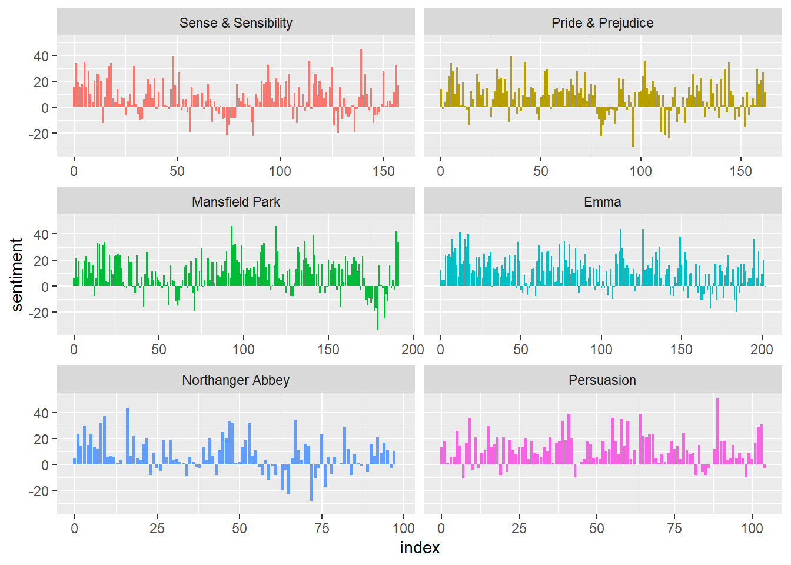
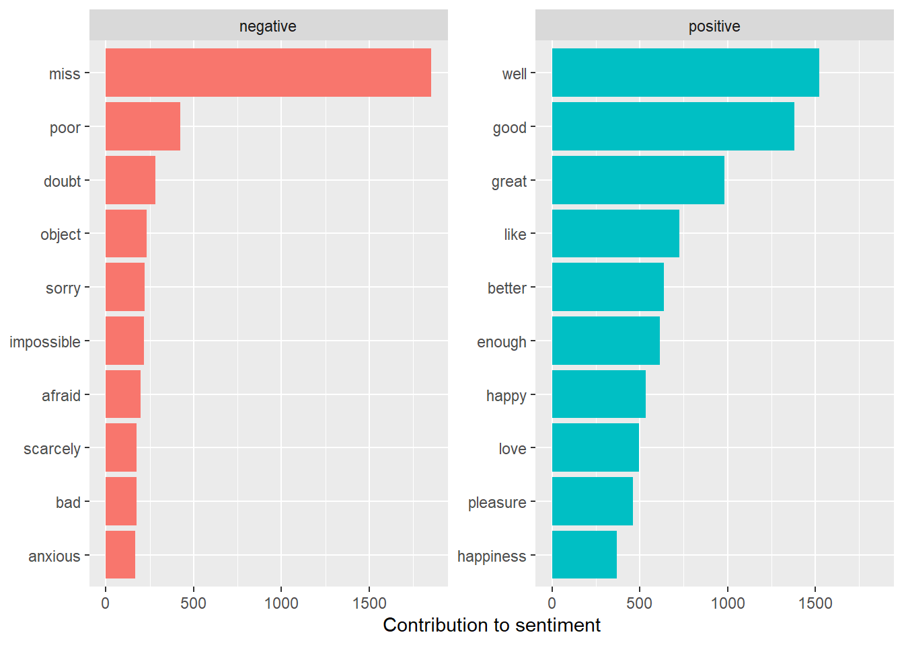
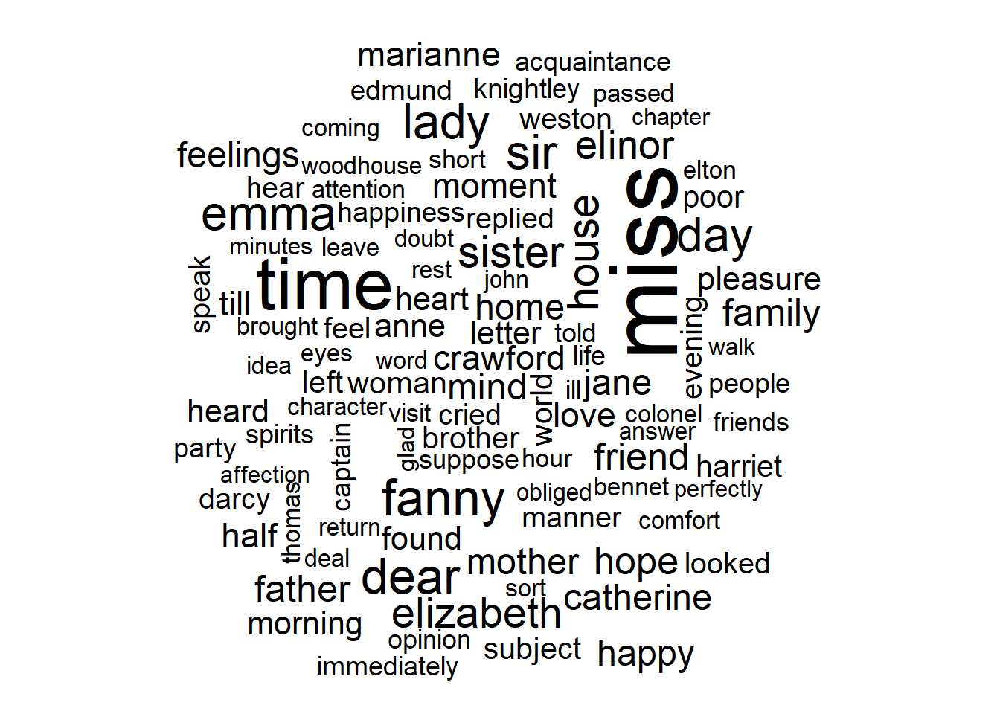
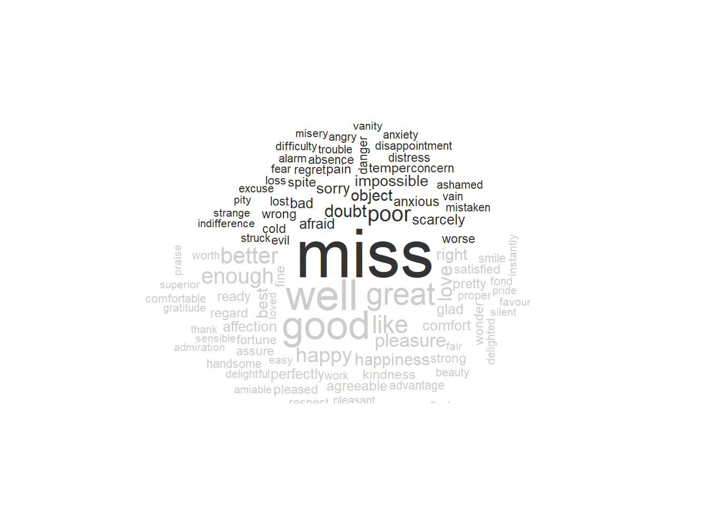
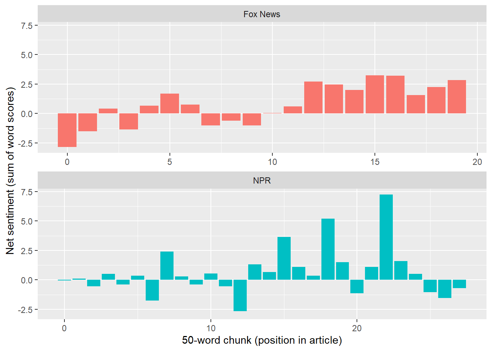

To start, we will be reproducing the full code from chapter 2 of Text Mining with R: A Tidy Approach(Silge and Robinson 2017)
#all packages loaded that will be used through the upcoming chapter library(tidytext)library(wordcloud)library(reshape2)library(janeaustenr)library(tidyverse)get_sentiments("afinn")
# A tibble: 13,872 × 2
word sentiment
<chr> <chr>
1 abacus trust
2 abandon fear
3 abandon negative
4 abandon sadness
5 abandoned anger
6 abandoned fear
7 abandoned negative
8 abandoned sadness
9 abandonment anger
10 abandonment fear
# ℹ 13,862 more rows
Sentiment analysis with inner join
#library(janeaustenr)#library(tidyverse)#create datset of words in Jane Austen books tidy_books <-austen_books() %>%#group the rows by book group_by(book) %>%#create a column for the line number using the rows and count chapters in the format "chapter number" mutate(linenumber =row_number(),chapter =cumsum(str_detect(text, regex("^chapter [\\divxlc]", ignore_case =TRUE)))) %>%#ungroup to create the tibbleungroup() %>%#split into one word per rowunnest_tokens(word, text)#create dataset using joy sentiments in nrc lexicon nrc_joy <-get_sentiments("nrc") %>%filter(sentiment =="joy")#filter to the book emma and only count the joy sentiment words tidy_books %>%filter(book =="Emma") %>%inner_join(nrc_joy) %>%count(word, sort =TRUE)
Joining with `by = join_by(word)`
# A tibble: 301 × 2
word n
<chr> <int>
1 good 359
2 friend 166
3 hope 143
4 happy 125
5 love 117
6 deal 92
7 found 92
8 present 89
9 kind 82
10 happiness 76
# ℹ 291 more rows
# using bing sentiments look at 80 line chunks and count the sentiments in each chunk. add columns with sentiment names using values of count n and a column for overall sentiment jane_austen_sentiment <- tidy_books %>%inner_join(get_sentiments("bing")) %>%count(book, index = linenumber %/%80, sentiment) %>%pivot_wider(names_from = sentiment, values_from = n, values_fill =0) %>%mutate(sentiment = positive - negative)
Joining with `by = join_by(word)`
Warning in inner_join(., get_sentiments("bing")): Detected an unexpected many-to-many relationship between `x` and `y`.
ℹ Row 435434 of `x` matches multiple rows in `y`.
ℹ Row 5051 of `y` matches multiple rows in `x`.
ℹ If a many-to-many relationship is expected, set `relationship =
"many-to-many"` to silence this warning.
#sentiment plots for each bookggplot(jane_austen_sentiment, aes(index, sentiment, fill = book)) +geom_col(show.legend =FALSE) +facet_wrap(~book, ncol =2, scales ="free_x")

pride_prejudice <- tidy_books %>%filter(book =="Pride & Prejudice")# looking at pride and prejudice compare each sentiment rating afinn <- pride_prejudice %>%inner_join(get_sentiments("afinn")) %>%group_by(index = linenumber %/%80) %>%summarise(sentiment =sum(value)) %>%mutate(method ="AFINN")
Joining with `by = join_by(word)`
Joining with `by = join_by(word)`
Warning in inner_join(., get_sentiments("nrc") %>% filter(sentiment %in% : Detected an unexpected many-to-many relationship between `x` and `y`.
ℹ Row 215 of `x` matches multiple rows in `y`.
ℹ Row 5178 of `y` matches multiple rows in `x`.
ℹ If a many-to-many relationship is expected, set `relationship =
"many-to-many"` to silence this warning.
#combine the data adnplot it using ggplot bind_rows(afinn, bing_and_nrc) %>%ggplot(aes(index, sentiment, fill = method)) +geom_col(show.legend =FALSE) +facet_wrap(~method, ncol =1, scales ="free_y")
# A tibble: 2 × 2
sentiment n
<chr> <int>
1 negative 3316
2 positive 2308
get_sentiments("bing") %>%count(sentiment)
# A tibble: 2 × 2
sentiment n
<chr> <int>
1 negative 4781
2 positive 2005
Most common negative and positive words
#looking at each word, plot the number of times each positive and negative is uedbing_word_counts <- tidy_books %>%inner_join(get_sentiments("bing")) %>%count(word, sentiment, sort =TRUE) %>%ungroup()
Joining with `by = join_by(word)`
Warning in inner_join(., get_sentiments("bing")): Detected an unexpected many-to-many relationship between `x` and `y`.
ℹ Row 435434 of `x` matches multiple rows in `y`.
ℹ Row 5051 of `y` matches multiple rows in `x`.
ℹ If a many-to-many relationship is expected, set `relationship =
"many-to-many"` to silence this warning.
bing_word_counts %>%group_by(sentiment) %>%slice_max(n, n =10) %>%ungroup() %>%mutate(word =reorder(word, n)) %>%ggplot(aes(n, word, fill = sentiment)) +geom_col(show.legend =FALSE) +facet_wrap(~sentiment, scales ="free_y") +labs(x ="Contribution to sentiment",y =NULL)

#add a custom sentiment for miss so it is not considered negative since it is used to describe an unmarried womancustom_stop_words <-bind_rows(tibble(word =c("miss"), lexicon =c("custom")), stop_words)custom_stop_words
# A tibble: 1,150 × 2
word lexicon
<chr> <chr>
1 miss custom
2 a SMART
3 a's SMART
4 able SMART
5 about SMART
6 above SMART
7 according SMART
8 accordingly SMART
9 across SMART
10 actually SMART
# ℹ 1,140 more rows
Word clouds
#library(wordcloud)#word cloud using word frequency tidy_books %>%anti_join(stop_words) %>%count(word) %>%with(wordcloud(word, n, max.words =100))
Joining with `by = join_by(word)`

#library(reshape2)#reshaped wordcloud to show positive on top and negative on bottom tidy_books %>%inner_join(get_sentiments("bing")) %>%count(word, sentiment, sort =TRUE) %>%acast(word ~ sentiment, value.var ="n", fill =0) %>%comparison.cloud(colors =c("gray20", "gray80"),max.words =100)
Joining with `by = join_by(word)`
Warning in inner_join(., get_sentiments("bing")): Detected an unexpected many-to-many relationship between `x` and `y`.
ℹ Row 435434 of `x` matches multiple rows in `y`.
ℹ Row 5051 of `y` matches multiple rows in `x`.
ℹ If a many-to-many relationship is expected, set `relationship =
"many-to-many"` to silence this warning.

# create a dataframe of each sentence p_and_p_sentences <-tibble(text = prideprejudice) %>%unnest_tokens(sentence, text, token ="sentences")p_and_p_sentences$sentence[2]
[1] "by jane austen"
# there are issues looking by line so we will look at chapters austen_chapters <-austen_books() %>%group_by(book) %>%unnest_tokens(chapter, text, token ="regex", pattern ="Chapter|CHAPTER [\\dIVXLC]") %>%ungroup()austen_chapters %>%group_by(book) %>%summarise(chapters =n())
# A tibble: 6 × 2
book chapters
<fct> <int>
1 Sense & Sensibility 51
2 Pride & Prejudice 62
3 Mansfield Park 49
4 Emma 56
5 Northanger Abbey 32
6 Persuasion 25
#for each book what has the highest proportion of negative words using bing lexiconbingnegative <-get_sentiments("bing") %>%filter(sentiment =="negative")wordcounts <- tidy_books %>%group_by(book, chapter) %>%summarize(words =n())
`summarise()` has regrouped the output.
ℹ Summaries were computed grouped by book and chapter.
ℹ Output is grouped by book.
ℹ Use `summarise(.groups = "drop_last")` to silence this message.
ℹ Use `summarise(.by = c(book, chapter))` for per-operation grouping
(`?dplyr::dplyr_by`) instead.
tidy_books %>%semi_join(bingnegative) %>%group_by(book, chapter) %>%summarize(negativewords =n()) %>%left_join(wordcounts, by =c("book", "chapter")) %>%mutate(ratio = negativewords/words) %>%filter(chapter !=0) %>%slice_max(ratio, n =1) %>%ungroup()
Joining with `by = join_by(word)`
`summarise()` has regrouped the output.
# A tibble: 6 × 5
book chapter negativewords words ratio
<fct> <int> <int> <int> <dbl>
1 Sense & Sensibility 43 161 3405 0.0473
2 Pride & Prejudice 34 111 2104 0.0528
3 Mansfield Park 46 173 3685 0.0469
4 Emma 15 151 3340 0.0452
5 Northanger Abbey 21 149 2982 0.0500
6 Persuasion 4 62 1807 0.0343
For additional practice we will be using a different lexicon for this analysis. We will use the sentiment created from the sentiment lexicon of Mathew Jockers and Tyler Rinker.
library(rvest)library(lexicon)jockers_rinker <- hash_sentiment_jockers_rinker %>%as_tibble() %>%rename(word = x, value = y)jockers_rinker
# A tibble: 11,710 × 2
word value
<chr> <dbl>
1 a plus 1
2 abandon -0.75
3 abandoned -0.5
4 abandoner -0.25
5 abandonment -0.25
6 abandons -1
7 abducted -1
8 abduction -0.5
9 abductions -1
10 aberrant -0.6
# ℹ 11,700 more rows
#size and score range jockers_rinker %>%summarise(words =n(),min_score =min(value),max_score =max(value),positive_words =sum(value >0),negative_words =sum(value <0))
Unfortunately, NPR does not allow web scraping so I have converted both articles to text and we will load them in like any other text file.
fox_url <-"https://www.foxnews.com/politics/desantis-calls-gop-midterm-losses-extinction-level-event-explains-why-florida-survived"# paragraphs matching these patterns are page furniture, not article text.# adjust this list after inspecting the scraped outputdrop_patterns <-"^(NEWYou|CLICK HERE|SIGN UP|Fox News Digital reached out|Born and raised)|Getty Images|\\(Reuters\\)"get_fox_text <-function(url) {read_html(url) %>%html_elements(".article-body p") %>%# paragraphs inside the article bodyhtml_text2() %>%str_squish() %>%discard(~ .x ==""||str_detect(.x, drop_patterns))}fox_text <-tryCatch(get_fox_text(fox_url),error =function(e) {message("Fox News scrape failed: ", conditionMessage(e))NULL })npr_text <-readLines("https://raw.githubusercontent.com/Keenan-Roe/DATA-607/refs/heads/main/Assignment%207/npr-world-reacts-midterm-el.txt")%>%str_squish() %>%discard(~ .x =="")
Warning in
readLines("https://raw.githubusercontent.com/Keenan-Roe/DATA-607/refs/heads/main/Assignment%207/npr-world-reacts-midterm-el.txt"):
incomplete final line found on
'https://raw.githubusercontent.com/Keenan-Roe/DATA-607/refs/heads/main/Assignment%207/npr-world-reacts-midterm-el.txt'
# strip down the article npr_text <-read_lines("npr_text.txt") %>% { .[str_which(., "^One color dominates"):str_which(., "contributed reporting")] }npr_text <- npr_text %>% { .[-unlist(lapply(str_which(., "^\\[\\]\\("), function(i) i:(i +2)))] } %>%str_subset("hide caption|toggle caption|/AP$|^Twitter Embed|^— .*@|pic\\.twitter|^I feel the world has an opportunity|^Reacting to the Democrats", negate =TRUE)# combine into one tibble: one row per paragrapharticles <-bind_rows(if (!is.null(npr_text)) tibble(article ="NPR", text = npr_text),if (!is.null(fox_text)) tibble(article ="Fox News", text = fox_text))stopifnot(nrow(articles) >0)articles %>%group_by(article) %>%summarise(paragraphs =n(),characters =sum(nchar(text)))
As in the original file, the text is split to one word per row. Austen’s books were tracked by line number; the articles are short, so each word’s position within its article (wordnumber) is used instead.
# A tibble: 2 × 2
article total_words
<chr> <int>
1 Fox News 982
2 NPR 1435
custom_exclude <-c("vice")article_sentiment <- tidy_articles %>%inner_join(jockers_rinker, by ="word") %>%filter(!word %in% custom_exclude)# how much of each article does the lexicon actually cover?tidy_articles %>%count(article, name ="total_words") %>%left_join(count(article_sentiment, article, name ="matched_words"),by ="article") %>%mutate(percent_matched =round(matched_words / total_words *100, 1))
The original file summed scores over 80-line chunks. These articles are only a few hundred to a thousand words long, so smaller 50-word chunks are used.
chunk_sentiment <- article_sentiment %>%group_by(article, index = wordnumber %/%50) %>%summarise(sentiment =sum(value), .groups ="drop")ggplot(chunk_sentiment, aes(index, sentiment, fill = article)) +geom_col(show.legend =FALSE) +facet_wrap(~article, ncol =1, scales ="free_x") +labs(x ="50-word chunk (position in article)",y ="Net sentiment (sum of word scores)")

Overall comparison
Total scores depend on article length, so the table also reports sentiment per 100 words and the average score of the words that matched.
#| title: sentence-sentimentsentence_scores <- articles %>%unnest_tokens(sentence, text, token ="sentences") %>%group_by(article) %>%mutate(sentence_id =row_number()) %>%ungroup() %>%unnest_tokens(word, sentence, drop =FALSE) %>%filter(!word %in% custom_exclude) %>%inner_join(jockers_rinker, by ="word") %>%group_by(article, sentence_id, sentence) %>%summarise(score =sum(value), .groups ="drop")# the single most negative and most positive sentence in each articlebind_rows( sentence_scores %>%group_by(article) %>%slice_min(score, n =1, with_ties =FALSE), sentence_scores %>%group_by(article) %>%slice_max(score, n =1, with_ties =FALSE)) %>%ungroup() %>%mutate(preview =str_trunc(sentence, 100)) %>%select(article, sentence_id, score, preview) %>%arrange(article, score)
# A tibble: 4 × 4
article sentence_id score preview
<chr> <int> <dbl> <chr>
1 Fox News 4 -2.55 "ron desantis warned wednesday that republicans ha…
2 Fox News 45 3.55 "desantis successfully focused on state-level resu…
3 NPR 59 -1.95 "in south africa, where diplomatic relations with …
4 NPR 63 6.75 "speaking during a regular briefing, she added tha…
Interpretation
When analyzing the data in something like news articles about a political election, it is important to note that we use normatively loaded language to describe objective events. For instance, a loss is considered negative but is also how we objectively describe the election results. Another interesting wrinkle when looking at this data is that trump is considered a negative term and will change the overall sentiment of each article as well.
With this in mind, we see that Fox news focused on the loss and kept the article short letting DeSantis’s quote be the bulk of the article. In addition, this article was on of the the most direct articles about this year’s midterms on Fox News the day after the election. the article was very negative, but it does not come through when looking at the sentiment score due to some standard nomencalture used when speaking on elections such as results, big, and like.
Moving over to the NPR article, it was much more robust with much of the article focusing on Trump’s less popular outcomes among all voting demographics. The negatives that the NPR article focused on were foreign affairs and war. However, the article clearly focused on the results, support, and leaders.
When comparing the net sentiment it would seem as though the Fox News side was using more positive language in general to describe the results while the lowest score comes from Rob Desantis stating “republicans have been nearly wiped out” (Creitz 2026) and the NPR lowest rated sentence being a comment on the relationship between the US and South Africa being at an “all time low” (Bartlett 2026)
Using sentiment lexicons may have some shortcoming when analyzing situations with extreme gravity. The Fox News article quote DeSantis stating that the midterm losses were “Extinction Level Event” (Creitz 2026) paints a much more negative picture with that one phrase than the entirety of the rest of the article. However, it is very interesting that the net scores were ultimately so close together and could show a pattern of communication styles that news networks use when reporting on any particular matter, positive or negative.